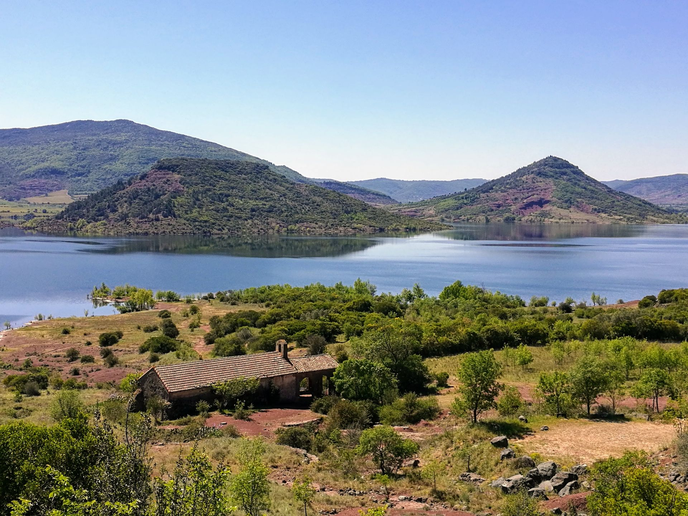
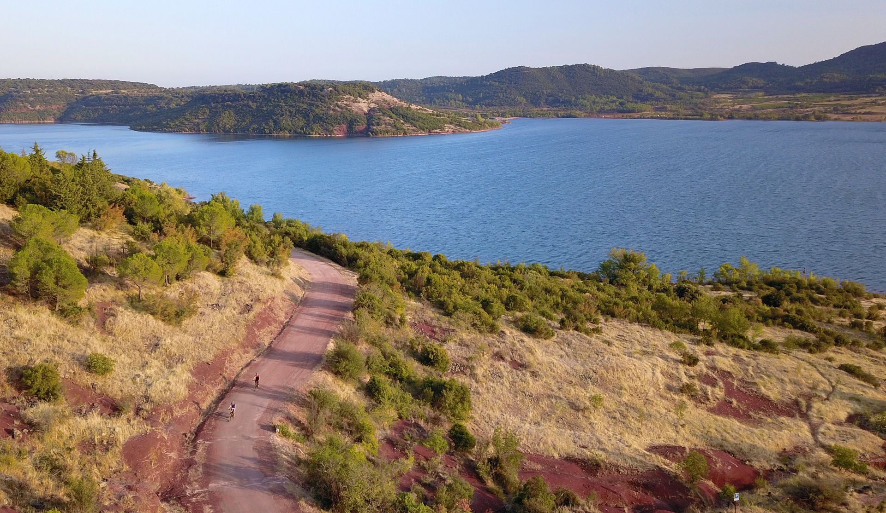
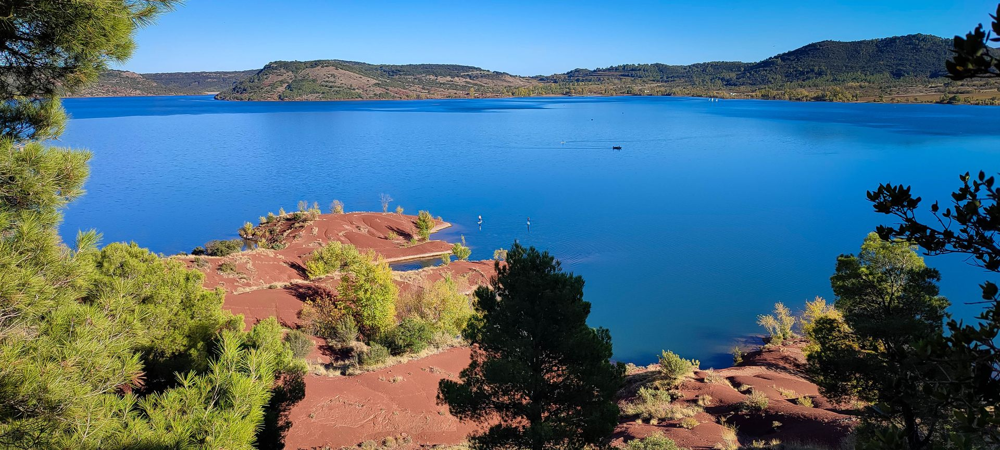
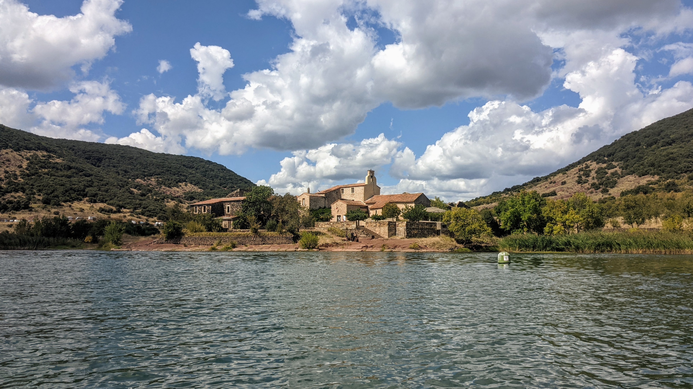
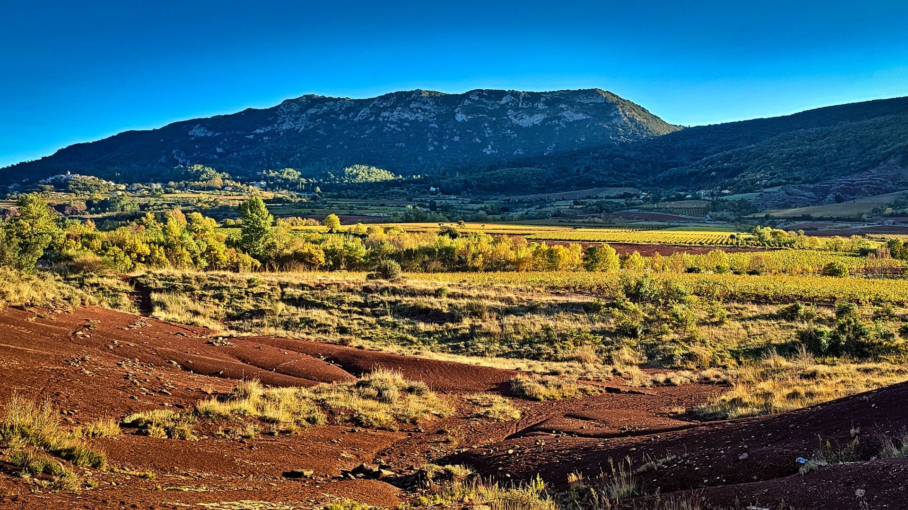
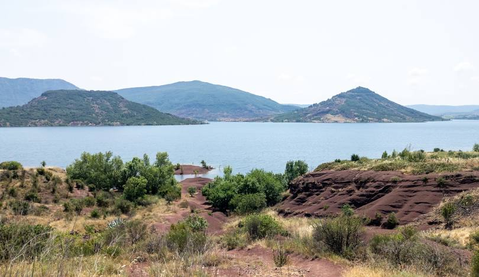
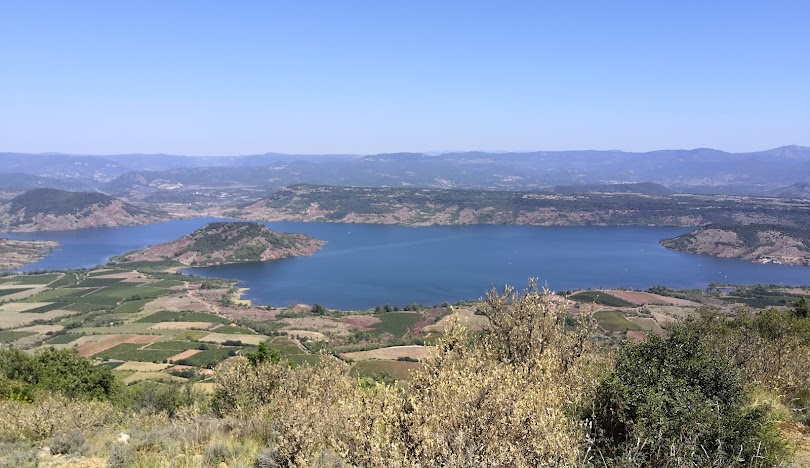
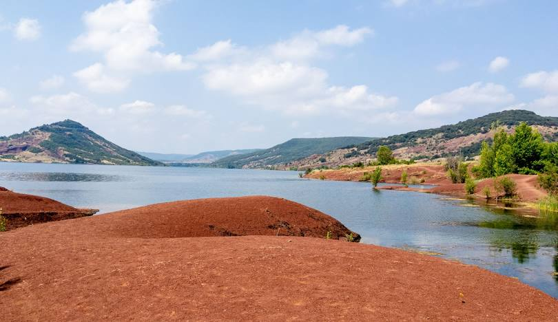
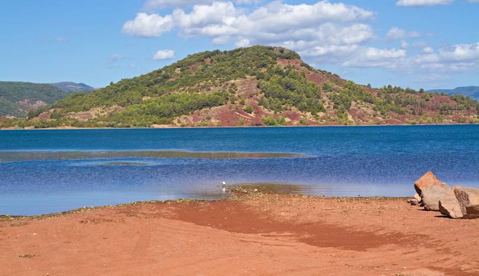

Tour du lac du Salagou










Description de l'événement
Au coeur de l'arrière-pays Languedocien, le Lac du Salagou est un endroit propice à la randonnée et à toutes sortes d'activités sportives de plein air. Au cœur du Grand Site Salagou – Cirque de Mourèze, 2 ou 3 jours de randonnée autour du plus célèbre des lacs de l’Hérault… Pour découvrir Clermont l’Hérault, le barrage du Salagou et toutes les rives du lac, Celles, Octon, Liausson, et même Mourèze pour les plus courageux ! Une micro-aventure accessible à tous, sur la planète Mars (ou en Arizona ?). Un bout du monde, si proche…
Des paysages à couper le souffle et des villages de charme Une randonnée accessible à tous, idéale pour un week-end « ailleurs » A la belle saison, de multiples occasions de baignades, et des guinguettes sympas
Cette randonnée vous emmènera autour du lac, offrant des vues panoramiques sur les eaux rouges caractéristiques du Salagou, ainsi que sur les formations géologiques uniques de la région. Le parcours est d'une distance d'environ 12 kilomètres et est adapté à tous les niveaux de randonneurs.
Le sentier est bien balisé et traverse divers paysages, allant des rives du lac aux collines environnantes, en passant par des zones boisées et des prairies ouvertes.
Des aires de pique-nique sont disponibles le long du parcours, permettant aux participants de se reposer et de profiter du cadre naturel.
Les étapes du circuit:
De Clermont l’Hérault à Barrage du Salagou
De Barrage du Salagou à Notre-Dame des Clans
De Notre-Dame des Clans à La Baie des Vailhès
De La Baie des Vailhès à Celles
De Celles à Rives d’Octon
De Rives d’Octon à Les Arcades
De Les Arcades à Rives de Liausson
De Rives de Liausson à Rives de Clermont
De Rives de Clermont à Château des Guilhem et Allées Salengro
De Château des Guilhem et Allées Salengro
Détails de l'événement
- Type : Randonnée pédestre
- Date : 2 janvier 2026
- Distance : 21,9 km
- Heure de départ : 9h00
- Heure d'arrivée : 16h00
- Durée : 3 jours
- Lieu de rendez-vous : Esplanade de la Gare
- Lieu d'arrivée : Esplanade de la Gare
- Niveau de difficulté : Moyen
- Équipement recommandé : Chaussures de randonnée, eau, chapeau, crème solaire, tente, sac de couchage, nécessaire de toilettes, lampe de poche, trousse de premiers secours
- Tarif : 50€ par personne (inclut le guide et les frais d'entrée)
- Accessibilité : Sentiers non accessibles aux personnes à mobilité réduite
- Dénivelé : 600 mètres
- Altitude maximale : 274 mètres
- Point d'eau / ravitaillement : Disponible sur le parcours: Aire de pique-nique, toilettes, points d'eau, aire de camping.
Inscrivez-vous dès maintenant pour participer à cet événement !
Pour toute question, n'hésitez pas à Nous contacter